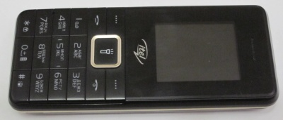
Телефон itel it5606 относится к модели ценовой категории до тысячи рублей. Тем не менее, в нём есть ряд особенностей, которые выделяют его на фоне остальных моделей. Пожалуй главная из них - это объём аккумулятора. Он тут 2500 мАч. При интенсивном использовании (10 часов в день прослушивание музыки, радио. Написание смс. Изредка ответ на звонки) телефона хватает на 6-7 дней. Имеется возможность одновременно вставить две сим-карты mini-sim и карту памяти объёмом до 32 ГиБ. Есть поддержка bluetooth. Кроме того, в телефоне есть камера 0,08 мегапикселей, а также простенький текстовый браузер. Телефон имеет яркий фонарик, достаточный, чтобы осветить дорогу ночью.
Из явных минусов можно выделить комплектную зарядку - она тут всего на 350 мА. Для полного заряда телефона потребуется около 8 часов.
Телефон поставляется в ярко красной картонной коробке с надписью itel.

На боковой стороне напечатаны характеристики телефона.
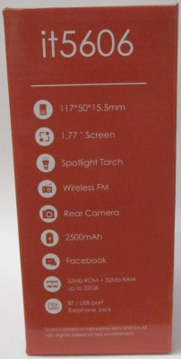
Внутри коробки кроме телефона расположено зарядное устройство и документация.
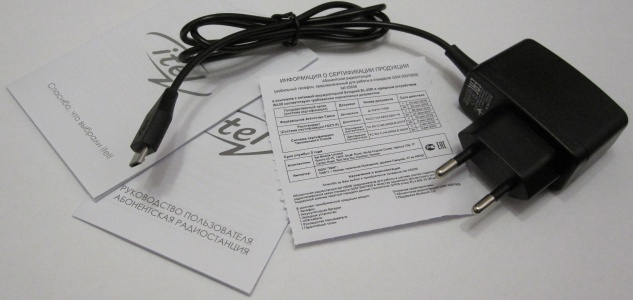
Экран тут обычный для таких телефонов, с матрицей TN. Наибольшее инвертирование цветов достигается при при отклонении от экрана вниз. Отклонения по горизонтали практически не заметны.
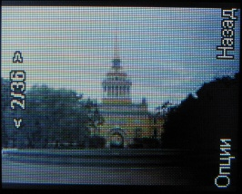


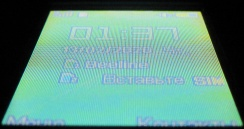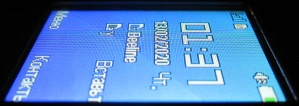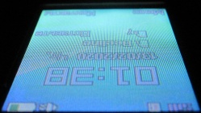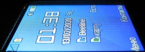
Меню обычное для кнопочных телефонов. Со стартового экрана мы попадаем в меню, где все приложения разбиты на категории, такие как Контакты, Радио и т.д. Отдельно можно выделить i-zone, за которым прячется встроенный браузер и приложение facebook.


Телефон поддерживает до 200 контактов в памяти телефона. Для каждого контакта можно привязать только один номер.

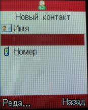
Главное не забыть после ввода данных зайти на том же экране в редактировать и выбрать сохранить, иначе придётся вводить всё заново. И так практически на каждой вкладке, где есть ввод данных.
Камера имеет сенсор 0.08 мегапикселей.

Отверстие для микрофона расположено нестандартно. Не в торце телефона, а в ряду между кнопками. На практике это даже удобнее, так как меньше шансов случайно закрыть микрофон рукой.
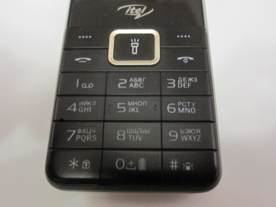
Размер фото можно устанавливать 320х240, 160х120 или 128х160. Последнее соответствует размеру экрана. Имеется настройка качества (хорошее/стандартное/низкое), формат снимков - jpeg. Настройка quality для каждого из режимов качества соответствует 90, 80 и 60. При этом наибольшую потерю качества можно получить при переходе от стандартного к низкому. Размер изображения 320х240 при хорошем качестве составляет 15-20 КиБ. Настройки камеры стандартны для подобных телефонов. Это устранение мерцания (50/60 Гц), ночной режим съёмки и баланс белого. На практике значения авто обычно достаточно, и в ручной настройке нет необходимости. Ниже примеры "шедевров", снятых на данную камеру.


Контейнер AVI. Кодек во всех случаях - MJPG, частота кадров 4,8 к/с. Звук PCM 16 бит, 8кгц, моно (128 килобит/с).
Для хорошего и стандартного качества разрешение экрана составляет 320х240, общий биртейт 500-800 килобит/с.
Для низкого - 176х144, общий битрейт составляет 300 килобит/с.

Аудио записывается в формате arm (низкое качество) или wav (высокое). Звук записывается как со встроенного микрофона, так и через гарнитуру (если вставлена). Переключить источник записи нельзя. При записи в высоком качестве используется кодек ADPCM 4 бита, 16 кгц, моно (64 килобит/с). При низком - приблизительно 14 килобит/с. Пригодной для использования можно считать разве что запись в формат wav.
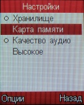
Список приложений стандартный. Это Будильник, Мировое время, Фонарик, приложение для передачи файлов через Bluetooth. На вкладке i-zone также есть встроенный браузер.

Отдельно на главном меню выделены приложение для фотографии, аудио и видеоплеер, ФМ-радио
Приложение фотографии представляет собой простейший просмотрщик файлов. Из возможностей - поворот изображения и пересылка (только через bluetooth). При этом сохранить повёрнутое изображение нельзя. Можно также выбрать, в каком порядке будет отсортирован список файлов. Телефон без проблем читает файлы формата jpeg. А вот с bmp и gif вышли проблемы. BMP файлы открываются размером вплодь до 500+-5 КиБ, gif - ~100 КиБ.
Аудиоплеер поддерживает форматы mp3, wav. Формат mp3 поддерживается как с постоянным, так и с переменным битрейтом (cbr, vbr). Формат wav поддерживает следующие кодеки: 16bit PCM, A-law, U-law, IMA ADPCM, MS ADPCM; словом, всё, что вы когда-либо могли записать на диктофон или в приложении звукозапись винды, здесь проиграется.
Если выбрать пункт меню Аудиоплеер, появляется следующее окно.
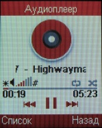
Клавишами * и # можно увеличить или уменьшить громкость.
Кнопка список выдаёт список композиций на устройстве, но, к сожалению, без разбивки по исполнителям.
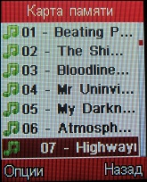
Там же, в меню список, можно посмотреть информацию о конкретной композиции (опции->сведения).
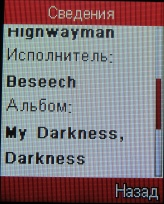
Можно также выбрать трек напрямую из приложения Мои файлы, но при этом окно проигрывания композиции будет отображаться в упрощённом виде.

Видеоплеер поддерживает форматы avi, mp4. Видеокодеки DIVX/XVID, MJPEG, аудиокодеки MP3 или PCM, частота 30 к/с. Максимальное разрешение видео составляет примерно 512х280, хотя удавалось запустить видео, например, 448x336. Точную закономерность установить не удалось, так что не любой рип подойдёт.
Браузер текстовый, времён WAP 2.0. Страницы открывает нормально, но только если по HTTP, и только если они на английском или в кодировке utf-8.

При присоединении кабеля телефон предлагает выбрать способ подключения: "Массовая память" или "Порт COM".

В первом случае в системе появятся два USB-накопителя: один соответствует карте памяти, другой телефону. Некоторые функции, такие как аудиоплеер, при этом перестают работать. Скорость передачи данных с компьютера на карту памяти ограничена 350 КиБ/с, что быстрым никак не назовёшь. На копирование одной песни уходит приблизительно 30 секунд.
Под крышкой телефона скрывается массивный аккумулятор на 9.25 Втч (3.7 В, 2500 мАч). Модель аккумулятора - BL-25BI.
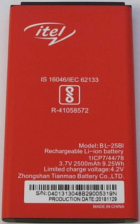
За аккумулятором расположены два слота для карты Mini-SIM и один для карты памяти microSD.
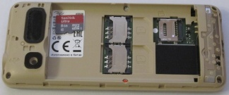
Верхняя часть крышки крепится к нижней шестью болтами. А вот и фото внутренностей телефона (к сожалению, до процессора я не добрался, так как мне этот телефон ещё использовать ^_^)

(c) Михаил Морозов 2020. Это произведение доступно по лицензии Creative Commons Attribution 4.0 International